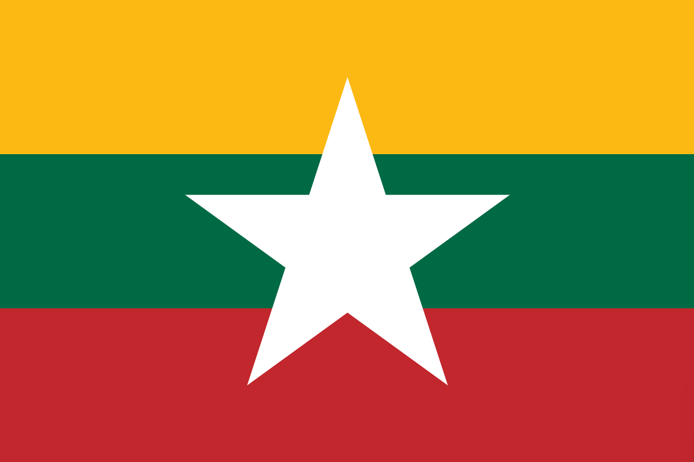
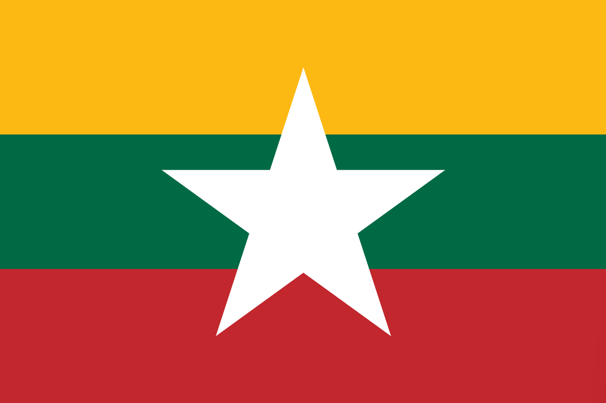

Get Discount
It's a lovely day, dear customers. Us, Pick Me Tteok owners, have a pleasant offer for you, ( ladies and gentlemen.) We are going to present with discounts to our loyal customers. If you would like it, please click “ GET DISCOUNT “ which is given below.
Speical Menu
Ever curious about the favourite Korean dishes of the Pick Me Tteok owners? Then check it out because this is about Pick Me Tteok owners' favourite Korean food. Yum!


 
